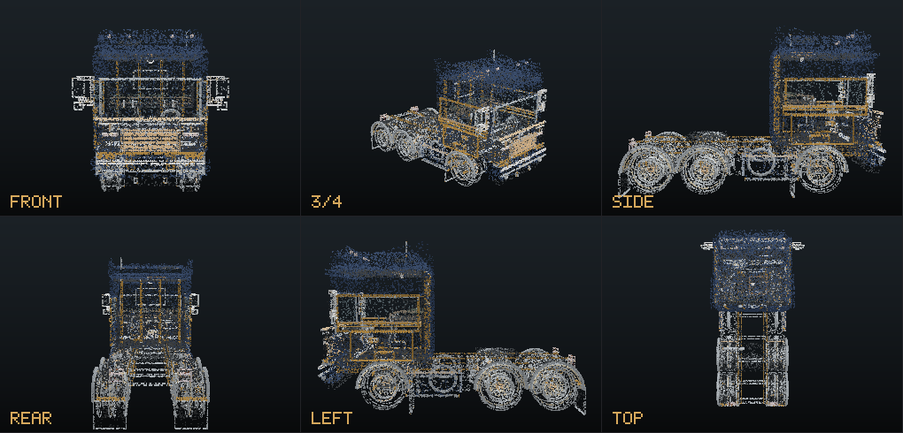
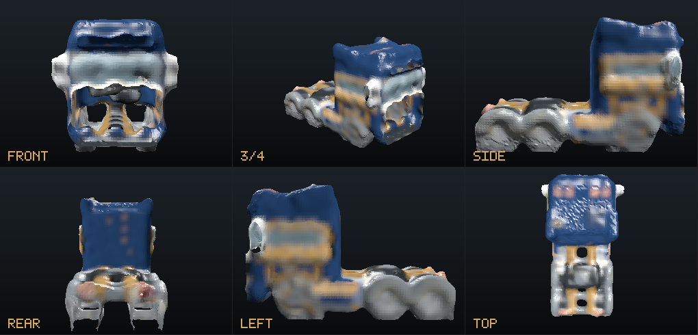
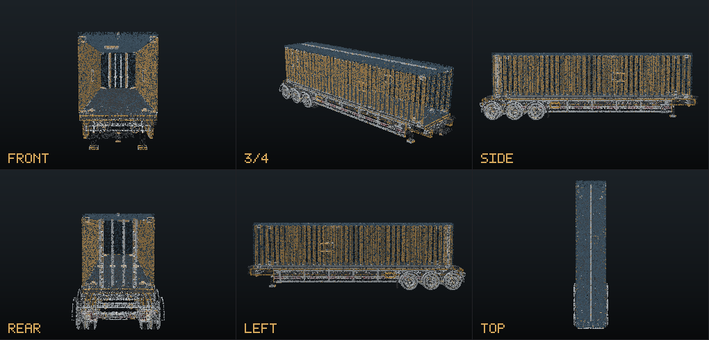
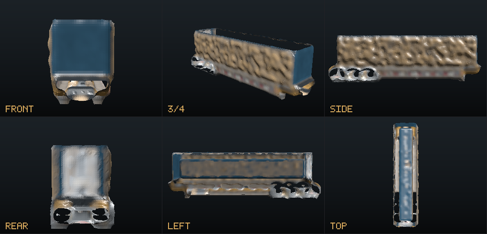
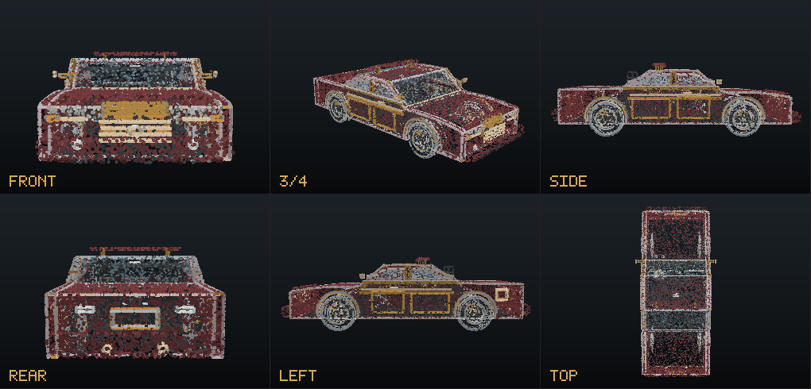
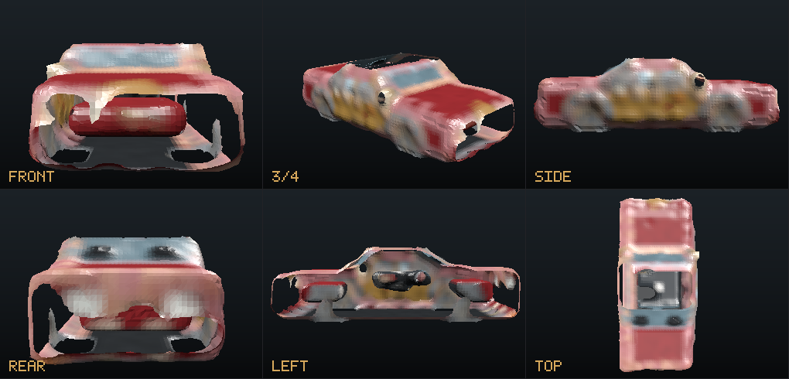
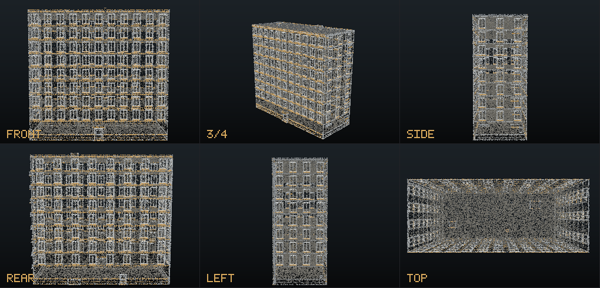
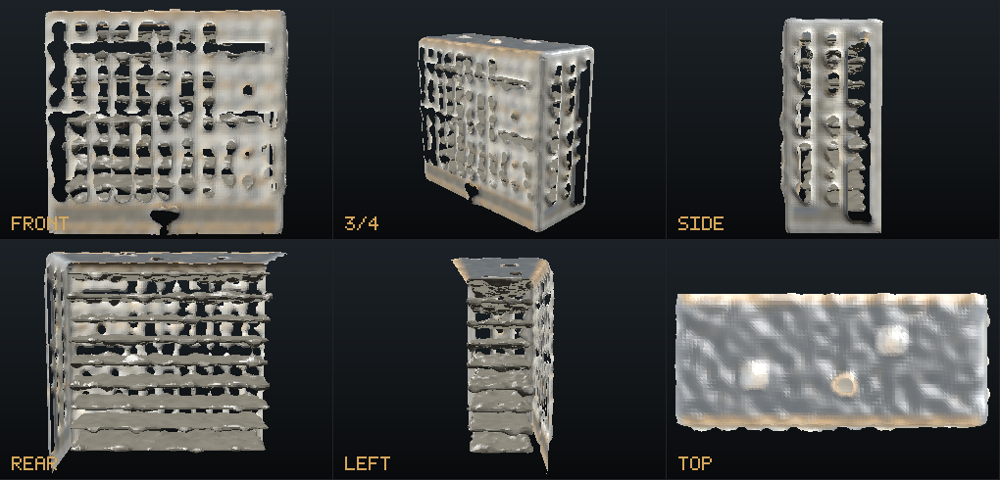

Тягач ATLAS Vision 4×2
26 300 точек контура и ямок · меш 22 051 узел / 43 462 треугольника


Полуприцеп-контейнеровоз
облако гуще сетки: 120 тыс. точек, клетка 0.10 м


Купе
45 % обводки — ямки: решётка, арки колёс, стыки панелей


Здание PANEL 9
31 м в высоту, 130 тыс. точек, клетка 0.31 м — окна читаются как ниши

